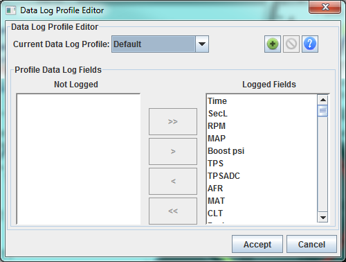
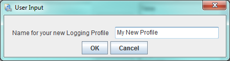
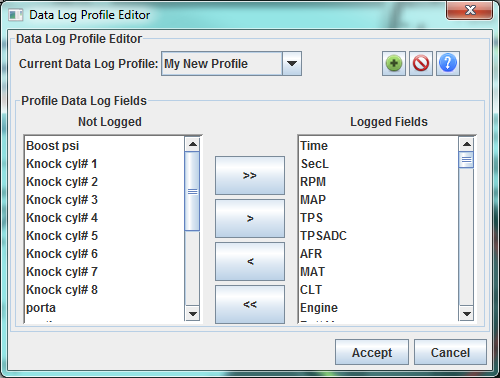
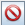

|
Data Log Profiles
|
|
Data Log Profile: By default when you data
log all fields defined by the firmware developers are included in your
data logs. For most typical tuning, data logging the complete set of
fields is fine and insures the broadest set of data fields is available
for later review. However you may choose to data log only a subset of
the available fields in order to achieve a faster data rate* or
decrease disk usage. Data Log Profiles provide you with this ability.
*With many older firmware, Logging a subset of fields will not improve
data rate because retrieving all runtime data in every read is the only
model supported. However with firmwares that support partial runtime
reads you will achieve higher data rates.
- MS2 Extra version 3.3+ (with CAN_COMMANDS On)
- MS3 1.3+ achieves substantially higher data rates.
Creating and Editing Data Log Profiles data
From the Main Menu select:
Data Logging --> Data Log Profiles

The Default Data Log Profile includes all fields and
they will be displayed on the right under "Logged Fields". This is a
special profile that is not user ediable.
Creating a Data Log Group - By Clicking on the Add Data Log Profile
Button (+), you will be prompted for the name of your new profile.

Once entered, it will appear in the drop down at the top.
Initially the fields will look the same as the Default Profile, however they will now be editable.

You may remove fields moving them to the left hand "Not Logged" list
using the < or << buttons or add the back to the logged list
with the > or >> buttons
To delete a Logging Profile; click the  Button.
With multiple profiles you may switch between them and edit them while
the dialog is open. All changes will be save when you click Accept.
Important: When you close the dialog with the accept button, the selected profile will be used for logging sessions within that project.
copyright 2013 EFIAnalytics.com